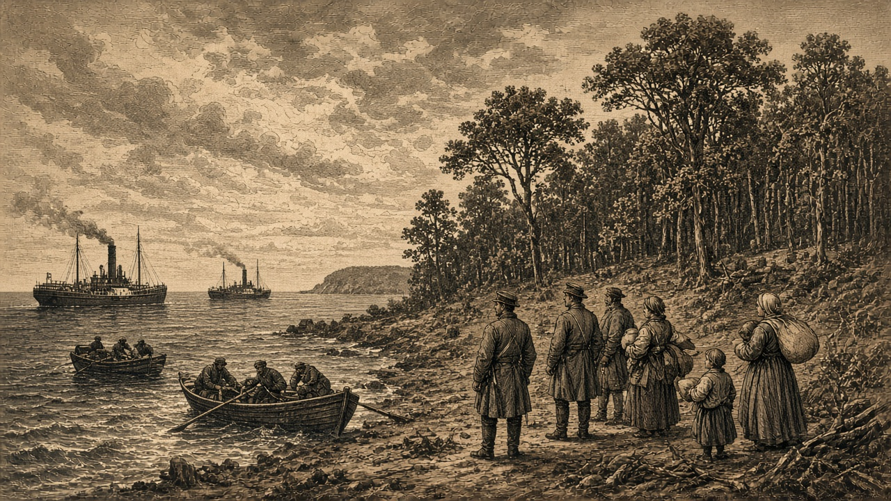

エクアドリア大陸に13か国
鉄鉱山6か所は教団が持つ
教団は6か所を守る 他国は弾薬を確保する

【総合部】エクアドリア大陸に領土を持つ国は13に上る。大陸の中に首都を置く9か国に加え、他の大陸に都を置く4か国が進出している。七つの大陸のうち、領地を分け合う国がいちばん多い。
首都を置くのは、青海共和国、狐っ娘の尻尾教団、アルガリスト帝国、胡椒帝国、灰岩王国、紅峰公国、翠湖自治州、橙原自治共和国、桃谷連邦共和国の9か国である。
あろあろ国、なのです主義人民共和国、オリョルッル王国、泰平天国の4か国は、都を別の大陸に置いたまま、エクアドリア大陸に領土を持つ。あろあろが16区画、なのですが7区画、オリョルッルが5区画、泰平が4区画。泰平の領地には軍港と大農場があり、海の艦と食料の足場を同じ大陸に置いている。
教団は鉱山を守り、他国は弾薬を確保する
エクアドリア大陸の鉄鉱山は6か所で、すべて狐っ娘の尻尾教団が持っている。教団にとって大事なのは、この6か所を守り、鋼鉄を出し続けることである。
鉱山と大鉱山は鋼鉄を産む。鉱山は、自国の炭坑が隣にあれば鋼鉄が5割増しになる。軍需工場は工業品と鋼鉄から弾薬を作る。弾薬が足りなければ、陸の戦いで与える損害は通常の約4分の1になる。海の戦いとミサイルは中止になる。兵が多くても、弾薬が尽きれば相手に与えられる打撃は小さくなる。
教団以外の国にとって大事なのは、弾薬を確保することである。あろあろはノルステア大陸に鉱山を2か所、なのですがアウストレア大陸に大鉱山を1か所持つ。別の大陸に鉱山があっても、弾薬が尽きれば陸の損害は約4分の1のままである。鉱山を持たない国は、交易と備蓄で弾薬を補う。
中立の土地へ、軍が先に入る
鉄鉱山に限らず、中立の森と荒地も領土を広げる道である。今週、オリョルッル王国となのです主義人民共和国は、その中立地を取った。中立の土地に軍を先に置けば、その区画は自国の領土になる。取った土地は、次に隣へ進む足場になる。
オリョルッル、3つの大陸で13区画
オリョルッル王国は今週、ウェステラ大陸で森と荒地を7区画取った。エクアドリア大陸でも森を2区画確保し、本国のソルエクア大陸では中立の森と荒地を4区画加えた。一週の取得は13区画。領地は262区画から275区画になった。ウェステラ大陸に60区画、エクアドリア大陸に5区画を持つ。
人口は661,500人、兵力は487,100人。どの国とも戦争をしていない。空は曇り。
なのです主義人民共和国は、ウェステラ大陸で森を1区画取った。本国のアウストレア大陸では中立の森を1区画確保し、旧政府残党の山を1区画占領した。領地は288区画から291区画。人口は926,000人、兵力は459,900人。電都は晴れ。残党との戦いを続けながら、他の大陸にも領土を広げている。
あろあろ国はエクアドリア大陸に16区画、ボレアリス大陸に2区画を持つ。今週取ったのは、本国ノルステア大陸の平地1区画である。
泰平、アルガリストに宣戦
泰平天国がアルガリスト帝国に宣戦を告げた。泰平の首都・天都はボレアリス大陸にあり、アルガリストの都はエクアドリア大陸にある。泰平は同じ大陸に4区画を持ち、軍港と大農場を保有している。
今週、泰平はボレアリス大陸で中立の森を4区画取った。領地は147区画から152区画。人口は399,100人、兵力は395,500人。働き手の不足はない。天都は晴れ。開戦は第133期である。北の本国で森を広げ、アルガリストの本拠があるエクアドリア大陸には軍港を残している。
軍港は艦を造り、兵を海から運ぶ足場である。第133期の開戦を前に、教団は鉄鉱山を守り、戦う国は弾薬を確保する。
皇国、移したばかりの新都も失う
エスペランサ皇国は、前号で首都を置いた町をチェス＝シロバキア共和国に占領された。一週で再び都を失い、新しい都は置けていない。詳報は2面。